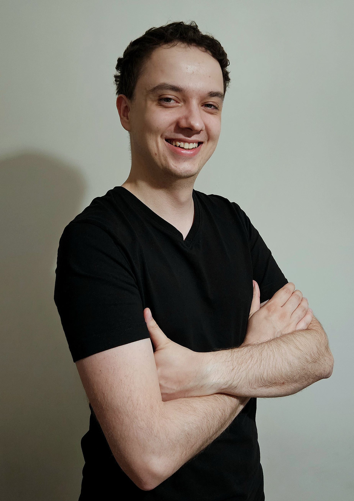
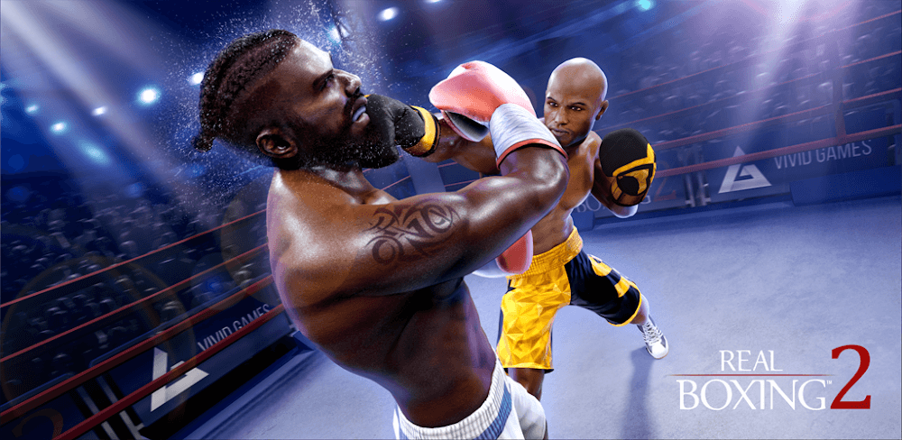

GAME DESIGNER - POZNAŃ, POLAND
Hi, My name is Jakub Waszak.

I’m a junior game designer with 3 years of experience in design and over 4 years in gamedev. I started my career at Vivid Games in Bydgoszcz as an intern junior tester, working on Eroblast and LoveNest. As a QA, I learned how games are built from the ground up. Later, when I moved to the Real Boxing 2 team as a junior game designer, I combined that knowledge with my deep love for games from childhood.
Working with coworkers who have been in this industry much longer, I gained experience in creating engaging mechanics not only for myself but, most importantly, for players. I learned how to develop, critique, and spot small gaps in my design that could break the entire idea — and how to fix them. Right now, I am focused on delivering Live Ops, managing in-game economy, and designing gameplay mechanics for mobile games. I am also developing myself in management and UX/UI.
Projects
Some information about my work so far and projects from my studies. Not much yet, but I have high hopes to build my experience further in the coming years.
Eroblast / LoveNest
Role: Intern Junior Tester
Responsibilities: Game testing, conducting A/B tests, assisting in analyzing minor results, preparing test documentation, and planning test cases.

Real Boxing 2
Role: Junior Game Designer
Contributions:
- Created and optimized game design documents focused on gameplay mechanics, in-game economy, and Live Ops events.
- Designed and balanced multiple game modes: Tournaments, Online Fights, Career, and Shop Pricing.
- Developed a new game mode from scratch: Road to Glory.
- Improved player engagement and game revenue through system enhancements.
- Used AI tools and data analytics to balance the economy and create dynamic in-game events.
- Collaborated closely with developers, QA, and artists to achieve project goals.
- Planned and executed Live Ops, gameplay optimizations, and innovative solutions for mobile games.
Blood Purge (Academic Project)
Type: RPG (Unreal Engine)
Description: Together with my university team, we created a mini-game where the player’s goal is to defeat vampires attacking a village and a castle.
Contact
Email: starkhd753@gmail.com
LinkedIn: linkedin.com/in/jakub-waszak-3b4409278